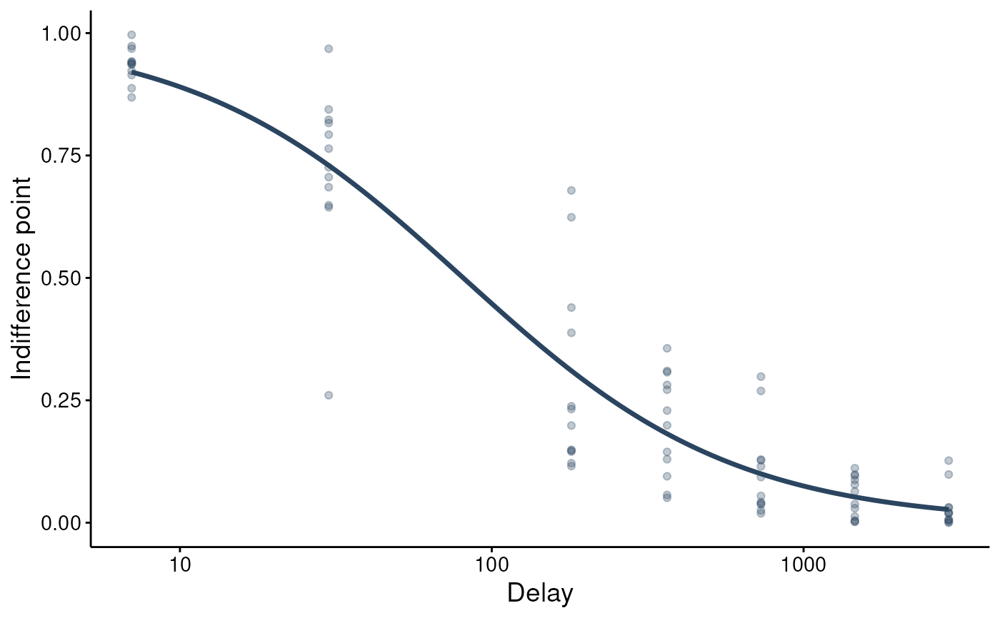
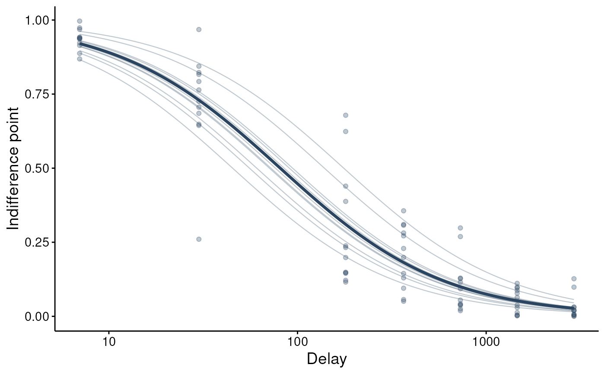

Visualize a fitted fit_dd_tmb() model. type = "population" draws the
population (random-effects-at-zero) discount curve over the observed
indifference points; type = "individual" adds the per-subject curves (the
shrinkage picture). For a fit with factors the population curve is drawn once
per factor-level combination; use at to condition on specific levels or
covariate values. type = "parameters" shows the distribution of the
subject-specific discount rate k (log scale); type = "resid" plots
standardized (Pearson) residuals against fitted values.
Arguments
- x
A
beezdiscounting_tmbobject.- type
One of
"population","individual","parameters","resid".- ids
Optional subset of subject ids for
type = "individual".- at
Optional named list conditioning the population curve on factor levels / covariate values (e.g.
list(group = "A")), passed to the same reference-grid machinery asget_dd_comparisons().- n_points
Number of delay points in the curve grid.
- x_trans
Delay-axis scale:
"log10"(default) or"linear".- show_observed
Overlay the observed indifference points.
- ...
Unused.
Value
A ggplot2::ggplot object.
Examples
# \donttest{
sim <- simulate_dd_ip(n_subjects = 12, seed = 1)
fit <- fit_dd_tmb(sim, equation = "mazur")
#> Fitting TMB mixed-effects discounting model (mazur, sltb)...
#> Subjects: 12, Observations: 84
#> Multi-start: best NLL = -113.59 (start set 3 of 3)
#> Converged (NLL = -113.59). Done.
plot(fit)

plot(fit, type = "individual")

# }